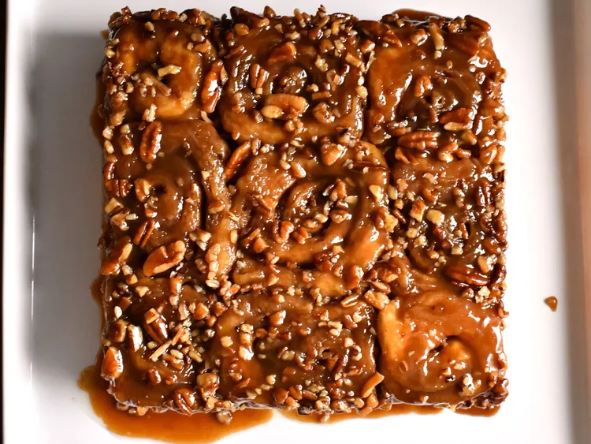

Caramel Rolls

Description
Indulge in the irresistible delight of homemade caramel rolls with this easy-to-follow recipe. Soft, pillowy dough infused with the rich aroma of cinnamon is rolled into tender spirals, generously coated with a luscious caramel sauce that caramelizes to perfection as it bakes. Each bite offers a symphony of buttery sweetness, with the caramel forming a decadent glaze that seeps into every crevice, creating a blissful harmony of flavors. Whether enjoyed fresh from the oven for breakfast or savored as a comforting treat with a cup of coffee, these caramel rolls promise to elevate any moment with their comforting warmth and irresistible allure.
Ingredients
Dough
- ¾ cup water
- 2 tablespoons butter
- 2 cups white bread flour
- 2 tablespoons white sugar
- 1 ½ tablespoons nonfat dry milk powder
- 1 teaspoon fast-rising dry yeast
- ½ teaspoon salt
Sauce
- ½ cup brown sugar
- ¼ cup light corn syrup
- ¼ cup butter
- ¼ cup chopped pecans (Optional)
Filling
- ¼ cup butter, softened
- ½ teaspoon ground cinnamon
Steps
- Make dough: Combine water, butter, bread flour, white sugar, milk powder, yeast, and salt, in that order, in the bucket of a bread machine. Select the Dough cycle. Remove dough from the machine after the cycle is done, about 1 hour 45 minutes.
- Meanwhile, make sauce: Combine brown sugar, corn syrup, and butter in a saucepan over medium heat. Cook and stir until sugar is dissolved, about 3 minutes. Pour sauce into an 8-inch square baking pan. Sprinkle with pecans and set aside.
- Fill dough: Turn dough out onto a floured surface, punch it down, and roll into an 8x12-inch rectangle. Dot with butter and sprinkle with cinnamon. Roll up and pinch seams together. Slice roll into 9 equal pieces, about 1 1/3-inches thick; place cut-side down into the baking pan on top of pecans. Set aside until rolls are doubled in size, about 1 hour.
- Preheat the oven to 375 degrees F (190 degrees C).
- Bake rolls in the preheated oven until golden brown, 20 to 25 minutes. Cool in the pan for no more than 3 minutes; invert a serving platter on top of the pan, then turn over. Carefully remove the pan to release rolls and allow pecan sauce to flow over rolls.
This article was originally submitted to Allrecipes by the user HungerGames12, here's the link to the original article. The text has been reproduced for educational purposes.